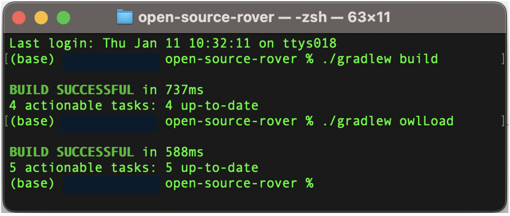

source("./osr_common.R")9 OML + Gradle + SPARQL + R
This page introduces one way to seamlessly connect openCAESAR processes using the R.
OML projects created by openCAESAR are Gradle projects that have OML analysis tools configured as Gradle tasks in a build.gradle script. A user can invoke Gradle tasks from a console/terminal session using the Gradle Wrapper Command-Line Interface (e.g., ./gradlew owlLoad). The supported OML editors such as OML Rosetta and OML Luxor allow invoking those Gradle tasks using a UI.
In the MBSE practice using openCAESAR, the vocabularies are described to answer analysis questions. Typically, the process is iterative. Build OML vocabularies and descriptions, write queries in the SPARQL language for analysis, and modify the model based on the query results in an exploratory manner.
We introduce two packages to improve the reproducibility of the exploratory modeling process with documentation tools such as R Markdown and Quarto.
- omlhashiR
- We use a package omlhashiR as a wrapper to run Gradle tasks of OML projects from R.
- tansakusuR
- We use a package tansakusuR as a wrapper to send SPARQL codes to the endpoint of OSR Model from R.
By using the “omlhashiR” and “tansakusuR” packages, workflows can be seamlessly connected.

9.1 Run Gradle Task from R
We have three options to run gradle tasks.
- Run task from your terminal.
- Run task using a
system()function with R - Run Task using a package omlhashiR
9.1.1 Run task from your terminal

cd ../
./gradlew owlLoad> Task :downloadDependencies UP-TO-DATE
> Task :omlToOwl UP-TO-DATE
> Task :owlReason UP-TO-DATE
> Task :startFuseki UP-TO-DATE
> Task :owlLoad UP-TO-DATE
BUILD SUCCESSFUL in 1s
5 actionable tasks: 5 up-to-date9.1.2 Using system command from R
oml_repo <- "../"
sprintf("cd %s\n ./gradlew owlLoad", oml_repo) |>
system(intern=TRUE)[1] "> Task :downloadDependencies UP-TO-DATE"
[2] "> Task :omlToOwl UP-TO-DATE"
[3] "> Task :owlReason UP-TO-DATE"
[4] "> Task :startFuseki UP-TO-DATE"
[5] "> Task :owlLoad UP-TO-DATE"
[6] ""
[7] "BUILD SUCCESSFUL in 1s"
[8] "5 actionable tasks: 5 up-to-date" 9.1.3 Using a package omlhashiR
library(omlhashiR)
oml_repository <- "../"
omlhashiR::oml_build(oml_repository) [1] "> Task :omlZip UP-TO-DATE"
[2] "> Task :assemble UP-TO-DATE"
[3] "> Task :downloadDependencies UP-TO-DATE"
[4] "> Task :omlToOwl UP-TO-DATE"
[5] "> Task :owlReason UP-TO-DATE"
[6] "> Task :check UP-TO-DATE"
[7] "> Task :build UP-TO-DATE"
[8] ""
[9] "BUILD SUCCESSFUL in 962ms"
[10] "4 actionable tasks: 4 up-to-date" omlhashiR::oml_owlLoad(oml_repository)[1] "> Task :downloadDependencies UP-TO-DATE"
[2] "> Task :omlToOwl UP-TO-DATE"
[3] "> Task :owlReason UP-TO-DATE"
[4] "> Task :startFuseki UP-TO-DATE"
[5] "> Task :owlLoad UP-TO-DATE"
[6] ""
[7] "BUILD SUCCESSFUL in 1s"
[8] "5 actionable tasks: 5 up-to-date" 9.2 Send SPARQL query from R
9.2.1 Using package “tansakusuR”
# For the first time
library(devtools)
install_github("UTNAK/tansakusuR")
library(tansakusuR)9.2.2 Set endpoint_url
endpoint_url <- "http://localhost:3030/open-source-rover/sparql"9.2.3 Set SPARQL Query
query_string <-'
PREFIX base: <http://imce.jpl.nasa.gov/foundation/base#>
PREFIX mission: <http://imce.jpl.nasa.gov/foundation/mission#>
PREFIX structure: <http://opencaesar.io/open-source-rover/vocabulary/structure#>
PREFIX scenario: <http://opencaesar.io/open-source-rover/vocabulary/scenario#>
PREFIX rdfs: <http://www.w3.org/2000/01/rdf-schema#>
PREFIX oml: <http://opencaesar.io/oml#>
SELECT DISTINCT ?manipulate ?f2_id ?f2_cname ?task ?time ?statevariable ?value ?f3_id
WHERE {
?m a scenario:Manipulates;
oml:hasSource ?t ;
oml:hasTarget ?s ;
scenario:setStateValue ?value ;
OPTIONAL{
?t scenario:hasPlannedStartTime ?time .
?t base:hasIdentifier ?f2_id .
?t base:hasCanonicalName ?f2_cname .
OPTIONAL{
?t mission:invokes ?f3 .
?f3 base:hasIdentifier ?f3_id .
}
}
# Extract the local name
BIND(STRAFTER(STR(?m), "#") AS ?manipulate) .
BIND(STRAFTER(STR(?t), "#") AS ?task) .
BIND(STRAFTER(STR(?s), "#") AS ?statevariable) .
}
ORDER BY ?m
'9.2.4 Send Query and show results
data_frame <- send_query(endpoint_url,query_string)
library(DT)
datatable(data_frame)9.2.5 Send Query with a .sparql file.
library(tansakusuR)
repo <- "../src/vision/sparql/"
file <- "component_with_id.sparql"
filepath <- paste0(repo,file)
show_query(filepath)PREFIX base: <http://imce.jpl.nasa.gov/foundation/base#>
PREFIX mission: <http://imce.jpl.nasa.gov/foundation/mission#>
PREFIX structure: <http://opencaesar.io/open-source-rover/vocabulary/structure#>
PREFIX rdfs: <http://www.w3.org/2000/01/rdf-schema#>
SELECT DISTINCT ?c1_localname ?c2_localname ?c2_id ?c2_cname
WHERE {
?c1 a structure:System ;
OPTIONAL{
?c1 structure:hasSubsystem ?c2 .
OPTIONAL{
?c2 base:hasIdentifier ?c2_id .
?c2 base:hasCanonicalName ?c2_cname .
}
}
# Extract the local name
BIND(STRAFTER(STR(?c1), "#") AS ?c1_localname) .
BIND(STRAFTER(STR(?c2), "#") AS ?c2_localname) .
}
ORDER BY ?c1_localname df <- send_query_from_file(endpoint_url, filepath)
datatable(df)Here is another example.
library(tansakusuR)
repo <- "../src/vision/sparql/"
file <- "query_scenario_move_v2.sparql"
filepath <- paste0(repo,file)
show_query(filepath)PREFIX base: <http://imce.jpl.nasa.gov/foundation/base#>
PREFIX mission: <http://imce.jpl.nasa.gov/foundation/mission#>
PREFIX structure: <http://opencaesar.io/open-source-rover/vocabulary/structure#>
PREFIX scenario: <http://opencaesar.io/open-source-rover/vocabulary/scenario#>
PREFIX rdfs: <http://www.w3.org/2000/01/rdf-schema#>
PREFIX oml: <http://opencaesar.io/oml#>
SELECT DISTINCT ?manipulate ?f2_id ?f2_cname ?task ?time ?statevariable ?value ?f3_id
WHERE {
?m a scenario:Manipulates;
oml:hasSource ?t ;
oml:hasTarget ?s ;
scenario:setStateValue ?value ;
OPTIONAL{
?t scenario:hasPlannedStartTime ?time .
?t base:hasIdentifier ?f2_id .
?t base:hasCanonicalName ?f2_cname .
OPTIONAL{
?t mission:invokes ?f3 .
?f3 base:hasIdentifier ?f3_id .
}
}
# Extract the local name
BIND(STRAFTER(STR(?m), "#") AS ?manipulate) .
BIND(STRAFTER(STR(?t), "#") AS ?task) .
BIND(STRAFTER(STR(?s), "#") AS ?statevariable) .
}
ORDER BY ?mdf <- send_query_from_file(endpoint_url, filepath)
datatable(df)